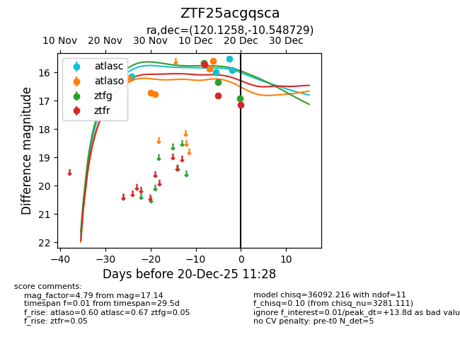
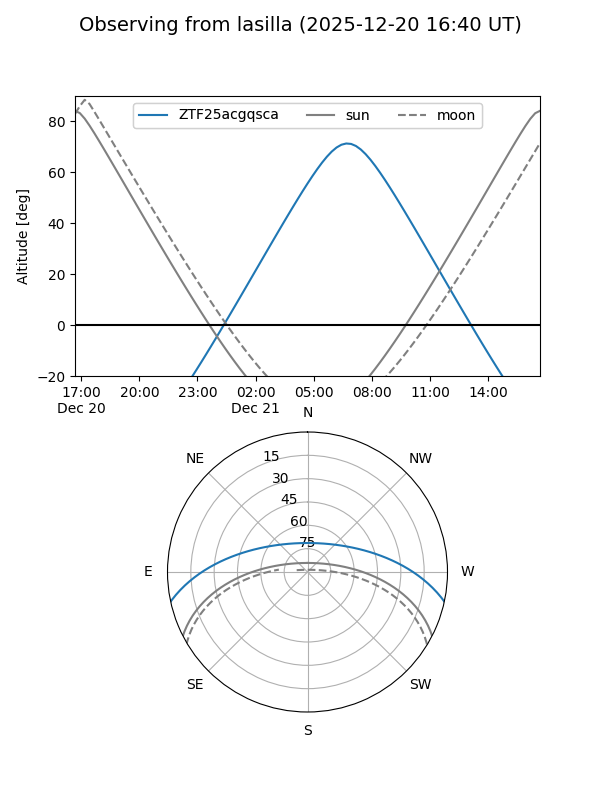
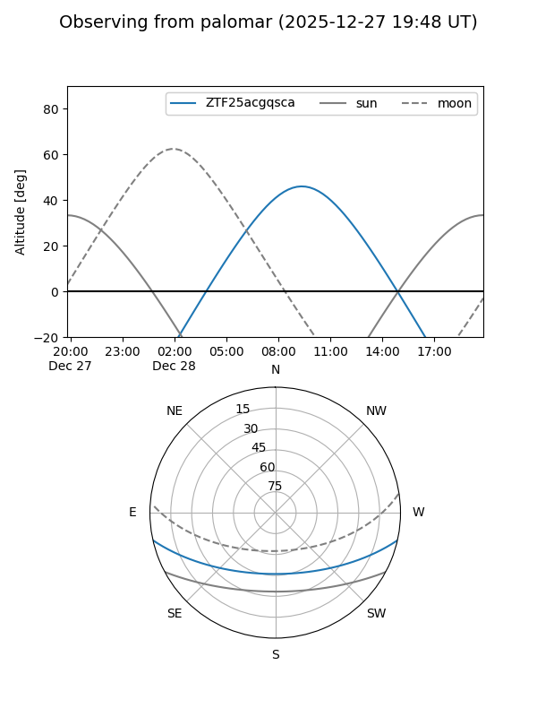
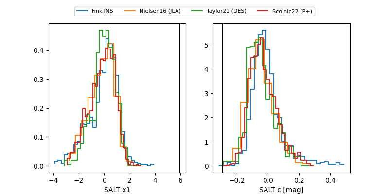

ZTF25acgqsca
Target ZTF25acgqsca at 2025-12-21 10:52
Aliases and brokers:
FINK: fink-portal.org/ZTF25acgqsca
Lasair: lasair-ztf.lsst.ac.uk/objects/ZTF25acgqsca
ALeRCE: alerce.online/object/ZTF25acgqsca
alt names
ZTF25acgqsca (ztf,fink_ztf)
Coordinates:
equatorial (ra, dec) = 120.1258,-10.54873
equatorial (HMS+DMS) = 08:00:30.20,-10:32:55.43
galactic (l, b) = (230.4311,+10.14961)
Flags:
likely cv
Photometry:
last ztfg=16.92, ztfr=17.95
3 ztfg, 4 ztfr detections
Lightcurve

Visibility


Additional plots
